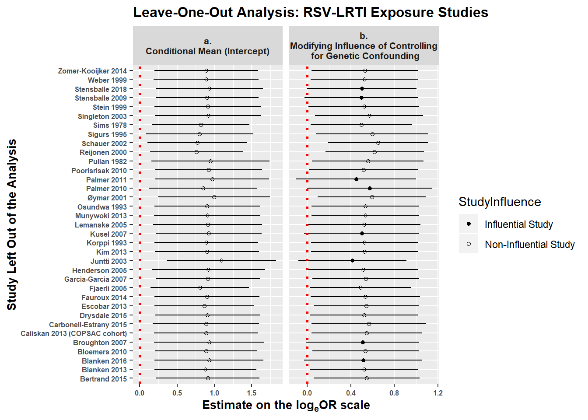

RSV-LRTI exposure studies
In this section, we evaluate whether there is evidence that confirmed RSV-LRTI is positively associated with subsequent wheezing illness in observational RSV-LRTI exposure studies and whether effect modifiers representing potential non-causal explanations for this association account for heterogeneity in the effect estimates. There are 35 RSV-LRTI exposure studies providing 129 estimates for the primary analyses. Note: Blanken et al. 2013, one of the two RSV immunoprophylaxis randomized controlled trials (RCTs), provided an estimate of the direct association between RSV-LRTI and subsequent wheezing illness, and therefore contributed one estimate to the RSV-LRTI exposure analyses.
Unconditional effect model
Create a data frame (whorsvexp) with only RSV-LRTI exposure studies
whorsvexp <- subset( whoprimary, rsvexp == 'RSV Exposure Studies' )
Model 1.0: Prior to running the a priori model, we first run a model with no effect modifiers to calculate the unconditional weighted mean logeOR (logeOR+). We use a simple working model of the within-study correlation matrix (set all within-study correlations to \(\rho\) = 0.80) in order to get optimally efficient inverse variance weights. The studyid variable is identified as the clustering variable and small-sample-size corrections are applied (Tipton, 2015). The analysis provides traditional estimates of between-study heterogeniety (\(\tau\)2 and I2), but the RVE approach deemphasizes the evaluation of between-study heterogeneity and focuses on obtaining accurate standard errors for fixed-effects parameters. \(\tau\)2 is calculated in RVE analyses only to allow for the calculation of optimally efficient weights (Tanner-Smith et al. 2016). Therefore, although the robumeta package reports traditional between-study heterogeneity estimates, we do not focus on them.
model1.0 <- robu( logor ~ 1, data = whorsvexp, studynum = studyid, var.eff.size = se_logor^2, rho = .8, small = T )
print( model1.0 )
## RVE: Correlated Effects Model with Small-Sample Corrections
##
## Model: logor ~ 1
##
## Number of studies = 35
## Number of outcomes = 129 (min = 1 , mean = 3.69 , median = 3 , max = 12 )
## Rho = 0.8
## I.sq = 86.17149
## Tau.sq = 0.3795473
##
## Estimate StdErr t-value dfs P(|t|>) 95% CI.L 95% CI.U Sig
## 1 X.Intercept. 1.22 0.109 11.3 29.4 0.00000000000355 1 1.44 ***
## ---
## Signif. codes: < .01 *** < .05 ** < .10 *
## ---
## Note: If df < 4, do not trust the results
To aid in interpretation, we exponentiate the logeOR+ estimate to transform the estimate to a weighted mean odds ratio (OR+).
( model1.0.df <- data.frame( OddsRatioEstimate=round( exp( model1.0$reg_table$b.r ), digits = 2 ),
LCI=round( exp( model1.0$reg_table$CI.L ), digits = 2 ),
UCI=round( exp( model1.0$reg_table$CI.U ), digits = 2 ) ) )
## OddsRatioEstimate LCI UCI
## 1 3.39 2.72 4.24
In the unconditional model, RSV-LRTI exposure is associated with a 3.39-fold increase in odds of subsequent wheezing illness (95% CI: 2.72, 4.24).
Model 1.0.1: It is plausible that the mean association between RSV-LRTI and wheezing illness observed in Model 1.0 is driven by transient wheezing illnesses whose manifestations are limited to the preschool years. To evaluate this possibility, we run a new model including only estimates evaluating the association between RSV-LRTI and subsequent “asthma” outcomes measured at age \(\ge\) 6 years. Estimates were included if the study authors described the corresponding outcome variable as “asthma” as determined by medical records, physician evaluation, and/or a pre-specified study criteria (e.g., \(\ge\) 3 wheezing episodes in the past year, use of asthma medications, etc.). This model focuses only on outcomes present at an age when early life transient wheezing episodes have typically resolved. Additionally, all estimates included in this model correspond to outcomes that were measured long after the washout period (>30 days) between the exposure and outcome measurements. Thus, we can be highly confident that all wheezing illness outcomes included in this analysis were not merely symptom manifestations of the index RSV-LRTI illness (i.e., the exposure and outcome are clearly separate).
First, we create a new dataframe (whorsvesp_asth6) including only estimates measuring asthma at age \(\ge\) 6 years.
whorsvexp_asth6 <- subset( whorsvexp, dxoutcome6 == 1 )
Next, we re-run Model 1.0 in the new data frame containing only estimates measuring asthma at age \(\ge\) 6 years.
model1.0.1 <- robu( logor ~ 1,
data = whorsvexp_asth6,
studynum = studyid,
var.eff.size = se_logor^2,
rho = .8,
small = T )
print( model1.0.1 )
## RVE: Correlated Effects Model with Small-Sample Corrections
##
## Model: logor ~ 1
##
## Number of studies = 14
## Number of outcomes = 41 (min = 1 , mean = 2.93 , median = 2 , max = 11 )
## Rho = 0.8
## I.sq = 66.57257
## Tau.sq = 0.3462975
##
## Estimate StdErr t-value dfs P(|t|>) 95% CI.L 95% CI.U Sig
## 1 X.Intercept. 0.971 0.189 5.15 12 0.00024 0.56 1.38 ***
## ---
## Signif. codes: < .01 *** < .05 ** < .10 *
## ---
## Note: If df < 4, do not trust the results
model1.0.1.est <- round( exp( c(model1.0.1$reg_table$b.r[1]) ), digits = 2 )
model1.0.1.lci <- round( exp( c(model1.0.1$reg_table$CI.L[1]) ), digits = 2 )
model1.0.1.uci <- round( exp( c(model1.0.1$reg_table$CI.U[1]) ), digits = 2 )
## Estimates on the OR scale
( model1.0.1.table <- data.frame(parameter=model1.0.1$reg_table$labels[1], ConditionalOddsRatio=model1.0.1.est[1], LCI=model1.0.1.lci[1], UCI=model1.0.1.uci[1] ) )
## parameter ConditionalOddsRatio LCI UCI
## 1 X.Intercept. 2.64 1.75 3.98
The weighted mean odds ratio from Model 1.0.1 is smaller than the estimate from Model 1.0, but remains positive and significant: OR+ = 2.64, 95% CI [1.75, 3.98]. Thus, the effect of RSV-LRTI on subsequent wheezing illness does not appear to be driven by estimates evaluating effects of RSV-LRTI on transient wheezing episodes in early life.
Primary (a priori) model
The a priori model for the RSV Exposure studies was as follows:
\(y^{ij} = \gamma_{00} + \gamma_{10} x_{1}^{ij} + \gamma_{20} x_{2}^{ij} + \gamma_{30} x_{3}^{ij} + \gamma_{40} x_{4}^{ij} + \gamma_{50} x_{5}^{ij} + \gamma_{01} w_{1}^{j} + \gamma_{02} w_{2}^{j} + \gamma_{60} (x_{1}^{ij}\times x_{2}^{ij}) + \gamma_{11} (x_{1}^{ij}\times w_{2}^{j}) + e^{ij} + u^j\)
where yij = logeOR for effect size estimate i within study j; \(\gamma\)00 = conditional mean of the distribution of population effect sizes; \(\gamma\)10 …\(\gamma\)60 = regression parameters for covariates (xij) whose values vary within studies; \(\gamma\)01, \(\gamma\)02 = regression parameters for covariates (wj) whose values are constant within studies; \(\gamma\)11 = regression parameter for a cross-level interaction; eij = within-study sampling error; uj = between-study deviations from the population average effect size. The model covariates (effect modifiers) are defined as follows:
- x1ij = study design: 0=exposure group membership determined by RSV-LRTI medical event; 1=exposure group membership determined by viral surveillance
- x2ij = age at outcome ascertainment: 0=preschool years (mean/median age < 5); 1=primary school years (mean/median age 5-12); 2=adolescence/adulthood (mean/median age \(\geq\) 13)
- x3ij = genetic confounding: 0=no clear attempt to control potential genetic confounding; 1=confounding controlled at least somewhat
- x4ij = co-infection confounding: 0=no attempt to control potential confounding due to co-infections at time of RSV+ LRTI ascertainment; 1= confounding controlled at least somewhat
- x5ij = neonatal health confounding: 0=no attempt to control potential confounding due to infant neonatal health; 1= confounding controlled at least somewhat
- w1j = participant risk: 0=study included children regardless of risk status; 1=study included only children at risk for wheezing illness beyond having an LRTI
- w2j = exposure ascertainment period: 0=study exposure ascertainment extends beyond 12 months of age; 1= exposure ascertainment entirely within the first 12 months of life.
Prior to conducting our robust variance estimation (RVE) meta-regression, it is critical to evaluate the distributions of the potential effect modifiers (covariates in the above equation). Our RVE models calculate degrees of freeedom (df) using Satterthwaite approximation. Estimates with df < 4 should not be trusted (Tipton, 2015). Imbalance and sparse cells in the covariates could be a cause of insufficient df.
There is notable imbalance in the variables coding age category at outcome ascertainment (i.e., relatively few estimates measured in Adolescence/Adulthood) and control of confouding due to co-infection (i.e., few studies minimized this potential confounder). We will run the a priori model as is and note whether the df indicate a problem.
( toutagecat2 <- with( whorsvexp, table( outagecat2f ) ) )
## outagecat2f
## Adolesc/Adult Preschool School Age
## 16 67 46
( tminanycoinf <- with( whorsvexp, table( minanycoinff ) ) )
## minanycoinff
## Limited Not limited
## 20 109
par( mfrow = c(1,1))
barplot( toutagecat2, main = 'Age Category at Outcome Measurement' )
barplot( tminanycoinf, main = 'Any Evidence Co-Infection Confounding Reduced' )
Model 1.1: We run the a priori model for RSV-LRTI exposure studies. First, we set the reference level for all effect modifiers to their modal values. Consequently, the intercept represents the conditional mean odds ratio estimate when all effect modifiers are held at their most common value (aOR+).
## Set reference levels for all effect modifiers to the modal factor category
whorsvexp$outagecat2f <- relevel( whorsvexp$outagecat2f, ref = 'Preschool' )
whorsvexp$minanycoinff <- relevel( whorsvexp$minanycoinff, ref = 'Not limited' )
whorsvexp$minanyneof <- relevel( whorsvexp$minanyneof, ref = 'Not limited' )
model1.1 <- robu( logor ~ surveilf*outagecat2f + surveilf*exp012f + minanygenf + minanycoinff + minanyneof + participantriskf,
data = whorsvexp,
studynum = studyid,
var.eff.size = se_logor^2,
rho = .8,
small = T )
( model1.1out <- data.frame( Parameters = model1.1$reg_table$labels,
Estimate = round( model1.1$reg_table$b.r, digits = 2),
StdErr = round( model1.1$reg_table$SE, digits = 2 ),
DF = round( model1.1$reg_table$dfs, digits = 2 ),
Lower_CI = round( model1.1$reg_table$CI.L, digits = 2 ),
Upper_CI = round( model1.1$reg_table$CI.U, digits = 2 ) ) )
## Parameters Estimate StdErr DF Lower_CI Upper_CI
## 1 X.Intercept. 1.19 0.28 10.98 0.56 1.81
## 2 surveilfSurveil 0.15 0.25 3.53 -0.57 0.87
## 3 outagecat2fAdolesc.Adult 0.78 0.64 1.91 -2.11 3.66
## 4 outagecat2fSchool.Age -0.38 0.24 13.19 -0.88 0.13
## 5 exp012fBeyond.12.months -0.56 0.16 8.13 -0.93 -0.20
## 6 minanygenfNot.limited 0.54 0.21 10.70 0.07 1.00
## 7 minanycoinffLimited 0.18 0.43 3.76 -1.03 1.40
## 8 minanyneofLimited 0.22 0.19 12.06 -0.20 0.63
## 9 participantriskfRisk.Based -0.34 0.15 11.45 -0.65 -0.02
## 10 surveilfSurveil.outagecat2fAdolesc.Adult -1.54 0.70 5.71 -3.26 0.18
## 11 surveilfSurveil.outagecat2fSchool.Age -0.04 0.32 4.99 -0.85 0.78
## 12 surveilfSurveil.exp012fBeyond.12.months 0.17 0.32 4.44 -0.68 1.02
The df for the estimate of the effect modifier coding age category at outcome ascertainment (outagecat2f) and comparing effect sizes measured in adolescence/adulthood to estimates measured in preschool are too small to be trusted (df=1.91). This may be due to the fact that there is high imbalance across the levels of this factor, with few estimates measuring effects in adolescence/adulthood. Additionally, the effect modifier coding whether effect sizes were adjusted for non-RSV co-infections (minanycoinff) also had df < 4. The likely consequence is that the confidence interval around the minanycoinf estimate is too narrow (Tipton, 2015). As the confidence interval for minanycoinf easily contains 0 (the null value) and is likely too narrow, we can clearly not reject the null hypothesis.
Model 1.2: We rerun Model 1.1 after collapsing the school age and adolescence/adulthood categories for the outcome age variable. It is now a binary variable called preschoolf. This effect modifier now compares effect size esitmates measured during the preschool years to estimates measured outside of the preschool years: preschool vs. schoolage/adolescence/adulthood. This may fix the df problem. Additionally, we dropped the two interaction terms as there was no evidence that they were significant and they had relatively small df. Because the minanycoinf effect modifier tests an a priori hypothesis, we retained it in our model even though it has df < 4.
( model1.2 <- robu( logor ~ surveilf + preschoolf + exp012f + minanygenf + minanycoinff + minanyneof + participantriskf,
data = whorsvexp,
studynum = studyid,
var.eff.size = se_logor^2,
rho = .8,
small = T )
)
## RVE: Correlated Effects Model with Small-Sample Corrections
##
## Model: logor ~ surveilf + preschoolf + exp012f + minanygenf + minanycoinff + minanyneof + participantriskf
##
## Number of studies = 35
## Number of outcomes = 129 (min = 1 , mean = 3.69 , median = 3 , max = 12 )
## Rho = 0.8
## I.sq = 64.22221
## Tau.sq = 0.2497
##
## Estimate StdErr t-value dfs P(|t|>) 95% CI.L 95% CI.U Sig
## 1 X.Intercept. 0.895 0.301 2.976 8.26 0.0171 0.2053 1.5842 **
## 2 surveilfSurveil 0.101 0.182 0.558 8.14 0.5918 -0.3163 0.5192
## 3 preschoolfPreschool 0.307 0.208 1.475 17.83 0.1578 -0.1305 0.7436
## 4 exp012fBeyond.12.months -0.446 0.171 -2.609 13.10 0.0215 -0.8143 -0.0770 **
## 5 minanygenfNot.limited 0.533 0.224 2.383 11.50 0.0354 0.0434 1.0222 **
## 6 minanycoinffLimited 0.179 0.388 0.461 3.84 0.6694 -0.9152 1.2729
## 7 minanyneofLimited 0.176 0.199 0.886 11.60 0.3934 -0.2582 0.6101
## 8 participantriskfRisk.Based -0.359 0.154 -2.325 12.23 0.0381 -0.6941 -0.0232 **
## ---
## Signif. codes: < .01 *** < .05 ** < .10 *
## ---
## Note: If df < 4, do not trust the results
With the exception of minanycofinff, all effect modifiers have df > 4 in Model 1.2. In both versions of the model (Model 1.1 and Model 1.2), the full confidence interval for the intercept—representing the adjusted weighted mean log odds ratio (logeOR+) when all effect modifiers are set to the modal category—is positive, suggesting a positive association between RSV-LRTI exposure and subsequent wheezing illness. We can convert the intercept estimate to the OR scale by exponentiating it:
model1.2.est <- round( exp( c(model1.2$reg_table$b.r[1]) ), digits = 2 )
model1.2.lci <- round( exp( c(model1.2$reg_table$CI.L[1]) ), digits = 2 )
model1.2.uci <- round( exp( c(model1.2$reg_table$CI.U[1]) ), digits = 2 )
## Estimates on the OR scale
( model1.2.table <- data.frame(parameter=model1.2$reg_table$labels[1], AdjustedMeanOddsRatio=model1.2.est[1], LCI=model1.2.lci[1], UCI=model1.2.uci[1] ) )
## parameter AdjustedMeanOddsRatio LCI UCI
## 1 X.Intercept. 2.45 1.23 4.88
The adjusted (conditional) weighted mean OR = 2.45 (95% CI: 1.23, 4.88) when holding all effect modifiers at their modal levels.
Effect estimates were larger among studies that did not control genetic confounding: \(\hat\gamma\)=0.53, 95% CI [0.04, 1.02]. This is consistent with the hypothesis that RSV-LRTI exposure is at least partly a marker of genetic susceptibility rather than a strictly causal factor. There was no evidence of effect modification by whether estimates were based on analyses controlling for non-RSV co-infections or neonatal health markers. Although these effect modifiers did not represent primary hypotheses, estimates from studies using a targeted enrollment strategy (i.e., enrolling only those with a known risk factor for wheezing illness other than RSV-LRTI exposure: participantriskf) and those in which the exposure ascertainment period was not entirely limited to the first 12 months of life (exp012f) yielded smaller effect sizes.
Model 1.3: To gauge how much smaller the expected weighted mean effect estimate when controlling for genetic confounding, we reran Model 1.2 changing the reference level of the minanygenf variable so that not controlling for genetic confounding was the reference category and controlling genetic confounding at least somewhat was the comparison level. The intercept in this model represents the logeOR+ estimate among studies that did not control genetic confounding, holding all other effect modifiers at their modal categories.
## Create a new factor for the genetic confounding effect modifier with "Not controlled" as the reference level
whorsvexp$minanygenrev <- factor(whorsvexp$minanygen,levels=0:1,labels=c('Not controlled','Controlled'))
model1.3 <- robu( logor ~ surveilf + preschoolf + exp012f + minanygenrev + minanycoinff + minanyneof + participantriskf,
data = whorsvexp,
studynum = studyid,
var.eff.size = se_logor^2,
rho = .8,
small = T )
print( model1.3 )
## RVE: Correlated Effects Model with Small-Sample Corrections
##
## Model: logor ~ surveilf + preschoolf + exp012f + minanygenrev + minanycoinff + minanyneof + participantriskf
##
## Number of studies = 35
## Number of outcomes = 129 (min = 1 , mean = 3.69 , median = 3 , max = 12 )
## Rho = 0.8
## I.sq = 64.22221
## Tau.sq = 0.2497
##
## Estimate StdErr t-value dfs P(|t|>) 95% CI.L 95% CI.U Sig
## 1 X.Intercept. 1.428 0.252 5.660 9.10 0.000297 0.858 1.9971 ***
## 2 surveilfSurveil 0.101 0.182 0.558 8.14 0.591828 -0.316 0.5192
## 3 preschoolfPreschool 0.307 0.208 1.475 17.83 0.157751 -0.130 0.7436
## 4 exp012fBeyond.12.months -0.446 0.171 -2.609 13.10 0.021512 -0.814 -0.0770 **
## 5 minanygenrevControlled -0.533 0.224 -2.383 11.50 0.035367 -1.022 -0.0434 **
## 6 minanycoinffLimited 0.179 0.388 0.461 3.84 0.669416 -0.915 1.2729
## 7 minanyneofLimited 0.176 0.199 0.886 11.60 0.393354 -0.258 0.6101
## 8 participantriskfRisk.Based -0.359 0.154 -2.325 12.23 0.038059 -0.694 -0.0232 **
## ---
## Signif. codes: < .01 *** < .05 ** < .10 *
## ---
## Note: If df < 4, do not trust the results
model1.3.est <- round( exp( c(model1.3$reg_table$b.r[1]) ), digits = 2 )
model1.3.lci <- round( exp( c(model1.3$reg_table$CI.L[1]) ), digits = 2 )
model1.3.uci <- round( exp( c(model1.3$reg_table$CI.U[1]) ), digits = 2 )
## Estimates on the OR scale
( model1.3.table <- data.frame(parameter=model1.3$reg_table$labels[1], ConditionalOddsRatio=model1.3.est[1], LCI=model1.3.lci[1], UCI=model1.3.uci[1] ) )
## parameter ConditionalOddsRatio LCI UCI
## 1 X.Intercept. 4.17 2.36 7.37
The intercept in Model 1.3 is considerably larger when it represents the logeOR+ among studies not controlling for genetic confounding compared to Model 1.2 when it represents studies that did control fo genetic confounding. The point estimate for the intercept increases from aOR+=2.45 in Model 1.2 to aOR+=4.17 in Model 1.3. The intercept is positive and signifcant in both models, indicating a positive conditional mean effect of RSV-LRTI on subsequent wheezing illness. But we expect a substantial drop in the weighted mean adjusted odds ratio (aOR+) for the effect of RSV-LRTI on subsequent wheezing illness when studies do something to control for genetic confounding.
Below we visualize the modifying effect of controlling for genetic confounding at least somewhat by plotting boxplots for the observared effect size estimates by whether or not the estimates controlled for genetic confounding. We superimpose the point estimates to show the observed distributions with the point size proportional to the estimate’s inverse variance (i.e., more precise estimates have larger points). Additionally, we superimpose red diamonds, the center of which represents the logeOR+ estimates based on models 1.2 and 1.3. The bottoms and tops of the diamonds represent, respectively, the lower and upper bound 95% confidence intervals. Finally, we highlight with a red triangle the estimate from the study by Poorisrisak et al. 2010 because this was the only estimate that eliminated genetic confounding by comparing monozygotic twins who were discordant for RSV-LRTI hospitalization. This point estimate was smaller than 88% (67/76) of the estimates that only partly controlled for genetic confounding. As the sample size was relatively small in this study, there was considerable uncertainty in this estimate with plausible estimates ranging from RSV-LRTI hospitalization being protective (lower 95% CI = 0.36) to highly damaging (upper 95% CI = 4.00).
whorsvexp$minanygenplot <- factor( whorsvexp$minanygen, levels = 0:1, labels=c('Not at all', 'At least somewhat') )
mingenfull <- with( whorsvexp, ifelse( studyname == 'Poorisrisak 2010', 1, 0 ) )#
mingenfullf <- factor( mingenfull, levels=0:1, labels=c('Not fully minimized','Fully minimized' ) )
x1 <- c(1,.9,1,1.1)
y1 <- c(model1.3$reg_table$CI.L[1],model1.3$reg_table$b.r[1], model1.3$reg_table$CI.U[1],model1.3$reg_table$b.r[1])
df1 <- data.frame(x1,y1)
x2 <- c(2,1.9,2,2.1)
y2 <- c(model1.2$reg_table$CI.L[1],model1.2$reg_table$b.r[1], model1.2$reg_table$CI.U[1],model1.2$reg_table$b.r[1])
df2 <- data.frame(x2,y2)
#tiff( 'Fig3.tiff', res=300, height = 8, width = 10, units = 'in' )
( box2 <- ggplot( whorsvexp, aes( x=minanygenplot, y=logor ) ) +
geom_boxplot( outlier.shape = NA ) +
geom_polygon(data=df1, aes(x=x1, y=y1 ), fill=NA, color='firebrick', size=1.25) +
geom_polygon(data=df2, aes(x=x2, y=y2 ), fill=NA, color='firebrick', size=1.25) +
annotate("text", x = 2.43, y =whorsvexp[ whorsvexp$studyname=='Poorisrisak 2010','logor'],
label = "Poorisrisak 2010", color='red', fontface='bold', size = 4.5) +
annotate("text", x = 1, y = max(whorsvexp$logor*1.1), size=5, label = paste( "aOR+ =",
round(exp(model1.3$reg_table$b.r[1]), digits=2),
"(95% CI:",round(exp(model1.3$reg_table$CI.L[1]), digits=2),
",",round(exp(model1.3$reg_table$CI.U[1]), digits=2),
")"),
color='firebrick', fontface='bold') +
annotate("text", x = 2, y =max(whorsvexp$logor*1.1), size=5, label = paste( "aOR+ =",
round(exp(model1.2$reg_table$b.r[1]), digits=2),
"(95% CI:",
round(exp(model1.2$reg_table$CI.L[1]), digits=2),
",",round(exp(model1.2$reg_table$CI.U[1]), digits=2),
")"),
color='firebrick', fontface='bold') +
geom_point( aes(size = whorsvexp$w ), position = position_jitterdodge(),
show.legend = F ) +
geom_point(data=whorsvexp[whorsvexp$studyname=='Poorisrisak 2010', ], aes(x=2.25, y=logor), colour='red', shape=17) +
ggtitle( 'Observed Effect Size Distributions and Conditional Mean Effect Sizes\nby whether Estimates Controlled for Genetic Confounding') +
ylab( 'Natural Log of the Odds Ratio' ) +
xlab( 'Controlled for Genetic Confounding?' ) +
theme( plot.title = element_text( size=14, face='bold', hjust=.5 ),
axis.title.x = element_text( size=14, face='bold' ),
axis.title.y = element_text( size=14, face='bold' ),
axis.text.x = element_text( size=13, face='bold'),
axis.text.y = element_text( size=13, face = 'bold')) +
theme(legend.position = "none") +
geom_hline(yintercept = 0, linetype = 'dashed', size = 1, colour = 1 )
)
#dev.off()
Sensitivity Analyses for RSV+ Exposure Studies
Model 1.4: We run a sensitivity analysis for Model 1.2 using different values for the presumed common correlation among effect sizes from the same study (\(\rho\)). We’ll rerun the model five times with the value of \(\rho\) taking on values ranging from 0.00 to 1.00 (full range of possible correlations) at an interval of 0.20. Then we can see if the model estimates and standard errors are sensitive to our choice of value for \(\rho\).
sensitivity( model1.2 )
## RVE: Correlated Effects Model with Small-Sample Corrections
## Model: logor ~ surveilf + preschoolf + exp012f + minanygenf + minanycoinff + minanyneof + participantriskf
##
## Sensitivity Analysis
##
## Rho = 0 Rho = 0.2 Rho = 0.4 Rho = 0.6 Rho = 0.8 Rho = 1
## X.Intercept. Coefficient 0.887 0.889 0.891 0.893 0.895 0.897
## Std. Error 0.298 0.298 0.299 0.300 0.301 0.301
## surveilfSurveil Coefficient 0.106 0.105 0.104 0.102 0.101 0.100
## Std. Error 0.180 0.180 0.181 0.181 0.182 0.182
## preschoolfPreschool Coefficient 0.309 0.308 0.308 0.307 0.307 0.306
## Std. Error 0.206 0.207 0.207 0.208 0.208 0.208
## exp012fBeyond.12.months Coefficient -0.448 -0.447 -0.447 -0.446 -0.446 -0.445
## Std. Error 0.169 0.169 0.170 0.170 0.171 0.171
## minanygenfNot.limited Coefficient 0.535 0.535 0.534 0.533 0.533 0.532
## Std. Error 0.221 0.222 0.222 0.223 0.224 0.224
## minanycoinffLimited Coefficient 0.175 0.176 0.177 0.178 0.179 0.180
## Std. Error 0.388 0.388 0.388 0.388 0.388 0.387
## minanyneofLimited Coefficient 0.179 0.179 0.178 0.177 0.176 0.175
## Std. Error 0.197 0.197 0.198 0.198 0.199 0.199
## participantriskfRisk.Based Coefficient -0.356 -0.356 -0.357 -0.358 -0.359 -0.359
## Std. Error 0.153 0.154 0.154 0.154 0.154 0.155
## Tau.sq Estimate 0.234 0.238 0.242 0.246 0.250 0.254
The coefficient and standard error estimates are highly similar no matter what value of \(\rho\) is selected. Thus, the value of \(\rho\) selected seems inconsequential.
Model 1.5: Next, we run a model dropping all estimates based on analyses that did not control for any potential confouders either through the study design or statistical analyses (i.e., naive estimates). Thus, we evaluate whether the estimates in Model 1.2 are driven by naive estimates, which we expect to be upwardly biased.
model1.5 <- robu( logor ~ surveilf + preschoolf + exp012f + minanygenf + minanycoinff + minanyneof + participantriskf,
data = whorsvexp[ whorsvexp$nocohortlab5!='No evidence of limiting confounders', ],
studynum = studyid,
var.eff.size = se_logor^2,
rho = .8,
small = T )
print( model1.5 )
## RVE: Correlated Effects Model with Small-Sample Corrections
##
## Model: logor ~ surveilf + preschoolf + exp012f + minanygenf + minanycoinff + minanyneof + participantriskf
##
## Number of studies = 27
## Number of outcomes = 106 (min = 1 , mean = 3.93 , median = 3 , max = 12 )
## Rho = 0.8
## I.sq = 61.92643
## Tau.sq = 0.2412138
##
## Estimate StdErr t-value dfs P(|t|>) 95% CI.L 95% CI.U Sig
## 1 X.Intercept. 0.9796 0.343 2.859 6.34 0.0271 0.1521 1.8070 **
## 2 surveilfSurveil -0.0603 0.281 -0.215 7.00 0.8360 -0.7240 0.6033
## 3 preschoolfPreschool 0.3254 0.250 1.303 11.98 0.2171 -0.2189 0.8698
## 4 exp012fBeyond.12.months -0.3830 0.278 -1.379 8.53 0.2030 -1.0167 0.2507
## 5 minanygenfNot.limited 0.6253 0.264 2.369 11.59 0.0362 0.0479 1.2028 **
## 6 minanycoinffLimited 0.1801 0.560 0.321 3.29 0.7672 -1.5177 1.8778
## 7 minanyneofLimited 0.1483 0.237 0.627 12.07 0.5423 -0.3667 0.6633
## 8 participantriskfRisk.Based -0.5117 0.205 -2.493 9.49 0.0330 -0.9723 -0.0511 **
## ---
## Signif. codes: < .01 *** < .05 ** < .10 *
## ---
## Note: If df < 4, do not trust the results
The modifying effect of controlling for genetic confounding (minanygenf) was robust when removing naive estimates and the intercept (conditional weighted mean logeOR) remained positive and significant. Confidence intervals for the other effect modifiers of primary interest (minanyconinff and minanyneof) still overlap the null. Thus, removing naive estimates did not alter our conclusions.
Leave-One-Out Analyses: Finally, we reran model 1.2 35 times, iteratively removing one study (and all of its estimates) at a time to determine whether any one study had enough influence to alter our main conclusions. The figure below shows estimates on the loge(OR) scale for the intercept (panel a) and the modifying influence of limiting genetic confounding (panel b). The x-axis shows the estimates on the logeOR scale when each individual study is dropped from model 1.2 one at a time. The y-axis shows which study was dropped from the analysis when calculating the estimates. The vertical red dotted line at 0 represents a null effect.
looplot_labeller <- function(variable,value){
return(looplotlabels[value])
}
looplotdf1 <- subset( looplotdf, parameter == 'Intercept' | parameter == 'minanygen' )
looplotdf1$parameter <- factor( looplotdf1$parameter )
levels( looplotdf1$parameter) <- c( 'a.\nConditional Mean (Intercept)',
'b.\nModifying Influence of Controlling for Genetic Confounding')
looplotdf1$StudyInfluence <- factor( ifelse( looplotdf1$cilow <= 0, 0, 1 ),
levels = 0:1,
labels = c('Influential Study','Non-Influential Study' ) )
looplotdf1 <- looplotdf1[ order(looplotdf1$StudyInfluence ), ]
#tiff( 'FigE1.tif', width = 10, units = 'in', height = 6, res = 300 )
( looplot <- ggplot( looplotdf1 ) +
geom_point( size = 1.2, aes( x=est, y=studynames, shape = StudyInfluence ) ) +
geom_segment( aes( x=cilow, y=studynames, xend=ciup, yend=studynames ) ) +
scale_shape_manual(values=c(16, 1)) +
geom_vline( xintercept=0, color='red', linetype='dotted', size=1) +
facet_wrap( ~parameter, scales = 'free_x' ) +
expand_limits(x = 0) +
ggtitle('Leave-One-Out Analysis: RSV-LRTI Exposure Studies') +
xlab( expression( bold('Estimate on the log'[e]*'OR scale')) ) +
ylab('Study Left Out of the Analysis') +
theme( plot.title = element_text( size=12, face='bold' ),
axis.title.x = element_text( size=10, face='bold' ),
axis.title.y = element_text( size=10, face='bold' ),
axis.text.x = element_text( size=6, face='bold'),
axis.text.y = element_text( size=6, face = 'bold'),
strip.text.x = element_text(size=8, face='bold') )
)

#dev.off()
Panel a shows that no matter which study (and all of its effect estimates) are removed from the model the confidence interval for the intercept estimate (i.e., the mean logeOR when all effect modifiers are held at their modal levels) does not contain the null value of 0. That is, there are no studies that are influential enough that their removal from the analysis would alter our conclusion about whether the intercept is greater than 0.
However, panel b shows that there are eight studies (Kusel 2007; Stensballe 2018; Palmer 2011; Blanken 2016; Palmer 2010; Juntti 2003; Stensballe 2009; Broughton 2007) whose removal would cause the confidence interval for the modifying effect of controlling for genetic confouding to overlap 0 – i.e., removing these studies (and all of their estimates) would nullify the finding that analyses adjusting for genetic confounding yield smaller effect estimates. This does not invalidate the modifying effect of controlling for genetics – we still prefer the estimate with all studies included – but simply indicates that the effect is not so robust that removing any given study would have no bearing on our conclusions. It is also important to note that all but one of the studies controlling for genetic confounding, Poorisrisak et al., 2010, used imperfect proxy measures (e.g., parental history of asthma) that only partly capture genetic risk. Thus, it is likely that our models underestimate the modifying effect of controlling for genetic confounding.
RSV immunoprophylaxis studies
In this section, we evaluate whether there is evidence that high-risk infants receiving RSV immunoprophylaxis have reduced risk of subsequent wheezing illness. There are eight RSV immunoprophylaxis studies (2 RCTs and 6 non-randomized studies) providing 24 estimates for the primary analyses.
First, we create a data frame with only RSV immunoprophylaxis Studies. There are 16 estimates from non-randomized prophylaxis studies and eight from the two RCTs.
whoprophyl <- subset( whoprimary, comptype == 'Prophylaxis vs No Prophylaxis' )
whoprophyl$rct <- factor( whoprophyl$rct, level=0:1, labels = c('Non-Randomized','RCT'))
table( whoprophyl$rct )
##
## Non-Randomized RCT
## 16 8
Model 2.1: We run a model evaluating the weighted mean average effect size across all RSV immunoprophylaxis studies. One effect modifier, coding whether the study used an RCT or a non-randomized study design, was included in the model.
print( model2.1 <- robu( logor ~ rct,
data = whoprophyl,
studynum = studyid, var.eff.size = se_logor^2, rho = .8, small = T ) )
## RVE: Correlated Effects Model with Small-Sample Corrections
##
## Model: logor ~ rct
##
## Number of studies = 8
## Number of outcomes = 24 (min = 1 , mean = 3 , median = 3 , max = 5 )
## Rho = 0.8
## I.sq = 87.67496
## Tau.sq = 0.3483243
##
## Estimate StdErr t-value dfs P(|t|>) 95% CI.L 95% CI.U Sig
## 1 X.Intercept. 0.189 0.282 0.6724 4.76 0.533 -0.546 0.924
## 2 rctRCT 0.035 0.387 0.0904 1.81 0.937 -1.816 1.886
## ---
## Signif. codes: < .01 *** < .05 ** < .10 *
## ---
## Note: If df < 4, do not trust the results
The number of df for the RCT parameter estimate is too small to be trustworthy. This is likely due to the small number of estimates provided by RCTs.
Model 2.2: We rerun Model 2.1 without the effect modifier and get a single estimate for all immunoprophylaxis studies.
print( model2.2 <- robu( logor2 ~ 1,
data = whoprophyl,
studynum = studyid, var.eff.size = se_logor^2, rho = .8, small = T ) )
## RVE: Correlated Effects Model with Small-Sample Corrections
##
## Model: logor2 ~ 1
##
## Number of studies = 8
## Number of outcomes = 24 (min = 1 , mean = 3 , median = 3 , max = 5 )
## Rho = 0.8
## I.sq = 86.23797
## Tau.sq = 0.2848453
##
## Estimate StdErr t-value dfs P(|t|>) 95% CI.L 95% CI.U Sig
## 1 X.Intercept. 0.192 0.208 0.92 6.69 0.389 -0.305 0.688
## ---
## Signif. codes: < .01 *** < .05 ** < .10 *
## ---
## Note: If df < 4, do not trust the results
model2.2.est <- round( exp( c(model2.2$reg_table$b.r[1]) ), digits = 2 )
model2.2.lci <- round( exp( c(model2.2$reg_table$CI.L[1]) ), digits = 2 )
model2.2.uci <- round( exp( c(model2.2$reg_table$CI.U[1]) ), digits = 2 )
## Estimates on the OR scale
( model2.2.table <- data.frame(parameter=model2.2$reg_table$labels[1], OddsRatio=model2.2.est[1], LCI=model2.2.lci[1], UCI=model2.2.uci[1] ) )
## parameter OddsRatio LCI UCI
## 1 X.Intercept. 1.21 0.74 1.99
The estimate is positive, logeOR+=0.19 (OR+=1.21), but the confidence interval easily overlaps 0, so we cannot be confident that those not receiving RSV prophylaxis (who presumably have greater risk/severity of RSV-LRTI) are at any greater odds of having subsequent wheezing illness.
Model 2.3: One of the primary threats to inference in non-randomized prophylaxis trials is confounding by indication: those receiving RSV immunoprophylaxis have more severe health problems and are thus more likely to receive the intervention (Carroll et al 2017). As a sensitivity analysis, we reran Model 2.2 after removing two studies in which there was no clear attempt to minmize confounding by indication: dos Santos Simoes et al. 2018 and Prais et al. 2016.
whoprophylsubset <- subset( whoprophyl, studyname != 'Prais 2016' & studyname != 'dos Santos Simoes 2018' )
print( model2.3 <- robu( logor ~ 1,
data = whoprophylsubset,
studynum = studyid, var.eff.size = se_logor^2, rho = .8, small = T ) )
## RVE: Correlated Effects Model with Small-Sample Corrections
##
## Model: logor ~ 1
##
## Number of studies = 6
## Number of outcomes = 20 (min = 2 , mean = 3.33 , median = 3 , max = 5 )
## Rho = 0.8
## I.sq = 84.27856
## Tau.sq = 0.2147875
##
## Estimate StdErr t-value dfs P(|t|>) 95% CI.L 95% CI.U Sig
## 1 X.Intercept. 0.322 0.187 1.73 4.88 0.146 -0.162 0.807
## ---
## Signif. codes: < .01 *** < .05 ** < .10 *
## ---
## Note: If df < 4, do not trust the results
model2.3.est <- round( exp( c(model2.3$reg_table$b.r[1]) ), digits = 2 )
model2.3.lci <- round( exp( c(model2.3$reg_table$CI.L[1]) ), digits = 2 )
model2.3.uci <- round( exp( c(model2.3$reg_table$CI.U[1]) ), digits = 2 )
## Estimates on the OR scale
( model2.3.table <- data.frame(parameter=model2.3$reg_table$labels[1], OddsRatio=model2.3.est[1], LCI=model2.3.lci[1], UCI=model2.3.uci[1] ) )
## parameter OddsRatio LCI UCI
## 1 X.Intercept. 1.38 0.85 2.24
The weighted mean effect is larger when removing the two studies that did not reduce risk of confounding by indication, but the confidence interval still overlaps 0. Therefore, there is insufficient evidence that those receiving RSV immunoprophylaxis have lower odds of developing subsequent wheezing illness.
Below is a forest plot summarizing results of models 2.2 and 2.3, evaluating the effect of RSV immunoprophylaxis on wheezing illness. Black squares with lines through them represent individual effect estimates and their 95% confidence intervals, with the size of the squares proportional to their weight in the analysis. The blue diamond represents the weighted mean effect size and 95% confidence interval for estimates from RCTs and observational studies clearly limiting confounders (i.e., the mean effect size without naive estimates). The red diamond represents the weighted mean effect from all studies, including those from observational studies that did not clearly limit potential confounders. The vertical dotted line represents a null effect size: logeOR+ = 0.
yaxis.or <- c(4:6,9,17:19,22:24,27:28,31:34,39:43,46:48)
yaxis.studylab <- c(7,10,20,25,29,35,44,49)
#tiff( 'Fig4.tif', width = 8, units = 'in', height = 10, res = 300 )
par( mar= c(6.2,18.5,1,11), xpd=T, oma=c( 0,0,0,0 ) )
with( prophylplot1, plot( logor, yaxis.or, type = 'p', pch = 15,
xlim = c( -3, 3 ), ylim =c( 0, max(yaxis.or)*1.1),
bty = 'n', yaxt = 'n', ylab = '', cex = weight*.8,
xlab = '', cex.axis = .8 ) )
## Arrows indicating direction of effect
arrows( x0 = -0.05, x1 = -3, y0 = -5.2, y1 = -5.2, xpd=T, length = .15, lwd = 2, col = 1 )
arrows( x0 = 0.05, x1 = 3, y0 = -5.2, y1 = -5.2, xpd=T, length = .15, lwd = 2, col = 'firebrick' )
text( c(-2.25, 2.25), c(-7,-7), labels = c("Favours protective\n effect of RSV-LRTI",
"Favours detrimental\n effect of RSV-LRTI"), xpd=T,
cex = .85, col = c(1,'firebrick'), font = 2)
## x-axis label
text( labels=expression(bold('log'[e]*'Odds Ratio (OR)')), font=2, cex=1, x = 0, y = -9.5, xpd = T )
## Confidence intervals for effect sizes
with( prophylplot1, segments( x0 = logor.cilow, x1=logor.ciup, y0=yaxis.or, y1=yaxis.or,
lty = 1, lwd=1.35, col = 1) )
## Labels for effect sizes and studies
with( prophylplot1, mtext( text = eslab, side = 2, outer = F, at = yaxis.or, las = 2, cex = .80 ) )
with( prophylplot1[ !duplicated(prophylplot1$studynamelong), ],
mtext( text = studynamelong, side = 2, outer = F, font = 2,
at = yaxis.studylab, las = 2, cex=.85, col = 1 ) )
#polygon( x=c(-3.53,0.207,3.95,0.207,-3.53), y=c(35.5,35,35.5,36,35.5))
## Mean effect size polygons
polygon( x=c(model2.2$reg_table$CI.L, model2.2$reg_table$b.r,
model2.2$reg_table$CI.U, model2.2$reg_table$b.r,
model2.2$reg_table$CI.L),
y=c(0,-1,0,1,0),col='firebrick',border='firebrick')
mtext( 'Mean: All Estimates', side = 2, outer = F, font=2, at = 0,
col = 'firebrick', las=2, cex = 1.1 )
polygon( x=c(model2.3$reg_table$CI.L, model2.3$reg_table$b.r,
model2.3$reg_table$CI.U, model2.3$reg_table$b.r,
model2.3$reg_table$CI.L),
y=c(14,13,14,15,14),col='dodgerblue',border='dodgerblue')
mtext( 'Mean: Without Unadjusted Estimates', side = 2, outer = F,
font = 2, at = 14, col = 'dodgerblue', las=2, cex=1.1)
## Subsection labels
text( labels = c( 'Randomized Controlled Trials','Observational: Adjusted for confounders','Observational: Unadjusted estimates' ),
x = c( -3, -3, -3), y = c(50.5, 36.5, 11.5), font = 2, xpd = T, cex = 1.1, pos = 2,
col=1)
segments( x0 = c(-15,-15,-15,-15,-15), x1 = c(15,15,15,15,15), y0=c(51.5,37.5,15.5,12.5,2.5), col='dark gray', lwd = 2 )
## Zero effect guideline
with( prophylplot1, segments( x0 = 0, x1=0, y0=-2, y1=max(yaxis.or)*1.05, lty = 3, lwd=2, col = 1) )
## Text in right margin
with( prophylplot1, text( x=4.5, y = yaxis.or+.05, labels = logor.plot, las = 2, xpd = T, cex=.8 ) )
with( prophylplot1, text( x=6.5, y = yaxis.or, labels = logor.cif, las = 2, xpd = T, cex=.8 ) )
with( prophylplot1, text( x=8.5, y = yaxis.or, labels = ageoutcome, las = 2, xpd = T, cex=.8 ) )
with( prophylplot1, text( x=4.5, y = max(yaxis.or)+5, labels = expression(bold('log'[e]*'OR')), las = 2, font = 2, cex=.9, xpd=T ) )
with( prophylplot1, text( x=6.5, y = max(yaxis.or)+5, labels = '95% CI', las = 2, font = 2, cex=.9, xpd=T ) )
with( prophylplot1, text( x=8.5, y = max(yaxis.or)+5, labels = 'Age\n(years)',
las = 2, font = 2, cex=.9, xpd=T ) )
with( prophylplot1, text( x=4.5, y = 0+.05, labels = round(model2.2$reg_table$b.r, digits=2), las = 2, font = 2, col = 'firebrick', cex = .9, xpd = T ) )
with( prophylplot1, text( x=6.65, y = 0, labels = paste( round(model2.2$reg_table$CI.L, digits=2), ",", round( model2.2$reg_table$CI.U, digits = 2) ),
las = 2, font = 2, col = 'firebrick', cex = .9, xpd = T ) )
with( prophylplot1, text( x=4.5, y = 14+.055, labels = round(model2.3$reg_table$b.r, digits=2), las = 2, font = 2, col = 'dodgerblue', cex = .9, xpd = T ) )
with( prophylplot1, text( x=6.65, y = 14, labels = paste( round(model2.3$reg_table$CI.L, digits=2), ",", round( model2.3$reg_table$CI.U, digits = 2) ),
las = 2, font = 2, col = 'dodgerblue', cex = .9, xpd = T ) )
## Main title
with( prophylplot1, text( x=-14.5, y = max(yaxis.or)+5, labels = 'RSV Immunoprophylaxis Studies', las = 2, font = 2,
col = 1, cex = 1.5, xpd = T, pos=4 ) )
#dev.off()
Model 2.4: Finally, we run a model including estimates from only the two immunoprophyalxis RCTs. As there were only two studies and eight estimates, we expect a large confidence interval around the weighted mean effect estimate. The RCTs have a major advantage of essentially eliminating the threat of confounding-by-indication given that participant characteristics could not affect the likelihood of their receiving the intervention.
print( model2.4 <- robu( logor ~ 1,
data = whoprophyl[ whoprophyl$rct == 'RCT', ],
studynum = studyid, var.eff.size = se_logor^2, rho = .8, small = T ) )
## RVE: Correlated Effects Model with Small-Sample Corrections
##
## Model: logor ~ 1
##
## Number of studies = 2
## Number of outcomes = 8 (min = 3 , mean = 4 , median = 4 , max = 5 )
## Rho = 0.8
## I.sq = 69.22263
## Tau.sq = 0.1461896
##
## Estimate StdErr t-value dfs P(|t|>) 95% CI.L 95% CI.U Sig
## 1 X.Intercept. 0.215 0.266 0.809 1 0.567 -3.16 3.59
## ---
## Signif. codes: < .01 *** < .05 ** < .10 *
## ---
## Note: If df < 4, do not trust the results
model2.4.est <- round( exp( c(model2.4$reg_table$b.r[1]) ), digits = 2 )
model2.4.lci <- round( exp( c(model2.4$reg_table$CI.L[1]) ), digits = 2 )
model2.4.uci <- round( exp( c(model2.4$reg_table$CI.U[1]) ), digits = 2 )
## Estimates on the OR scale
( model2.4.table <- data.frame(parameter=model2.4$reg_table$labels[1], ConditionalOddsRatio=model2.4.est[1], LCI=model2.4.lci[1], UCI=model2.4.uci[1] ) )
## parameter ConditionalOddsRatio LCI UCI
## 1 X.Intercept. 1.24 0.04 36.27
As expected, the confidence interval is very large, spanning OR values from 0.04 to 38.95. Consequently, we cannot rule out that getting a placebo instead of RSV immunoprophylaxis has either a strong protective effect or a highly damaging effect.
In sum, our analyses provide insufficient evidence that high-risk infants not receiving RSV immunoprophylaxis are at any greater odds of developing subsequent wheeze than their counterparts who receive RSV immunoprophylaxis.